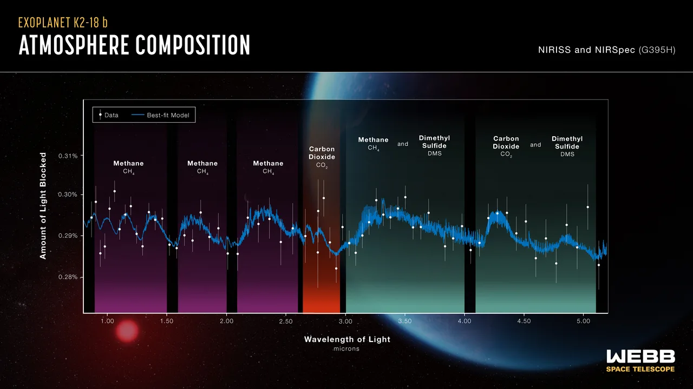

11. September 2023
Methan und Kohlendioxid in der Atmosphäre von K2-18 b
K2-18 b ist 8,6 mal so massereich wie die Erde und umkreist einen 120 Lichtjahre entfernten Roten Zwerg in dessen habitabler Zone. Das James Webb Space Telescope hat in seiner Atmosphäre Methan und Kohlendioxid nachgewiesen. Die Forscher halten es deshalb für möglich, dass K2-18 b ein sogenannter "Hycean-Planet" mit einer wasserstoffreichen Atmosphäre und einem globalen Ozean ist. Zusätzlich fanden sie ein schwaches Signal, das von Dimethylsulfid stammen könnte, einem Molekül, das auf der Erde fast nur von Lebewesen erzeugt wird.
Im April 2025 meldete dasselbe Team auf Basis weiterer Webb-Daten erneut Hinweise auf Dimethylsulfid. Unabhängige Auswertungen fanden dafür jedoch keinen belastbaren Nachweis. Ein Hinweis auf Leben ist das Signal nach heutigem Stand nicht.
Quelle: ESA/Webb: "Webb discovers methane, carbon dioxide in atmosphere of K2-18 b." Online; esawebb.org; 11.09.2023